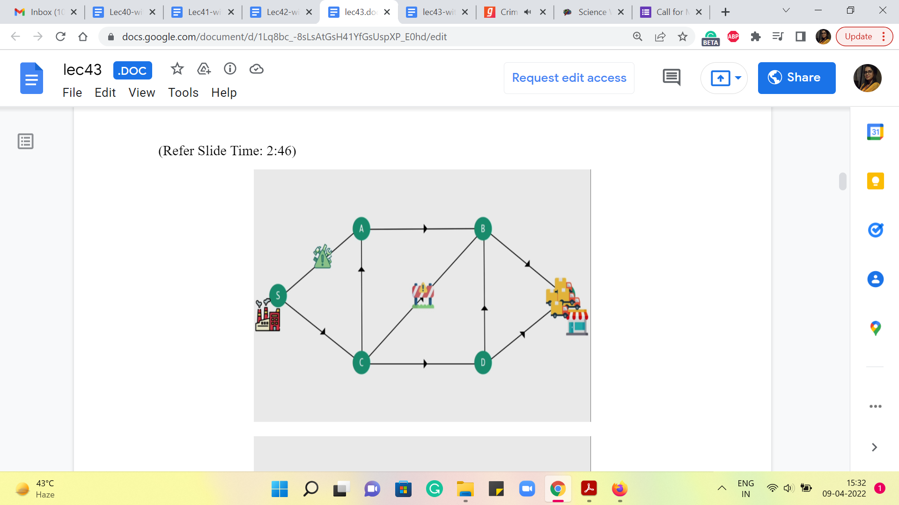
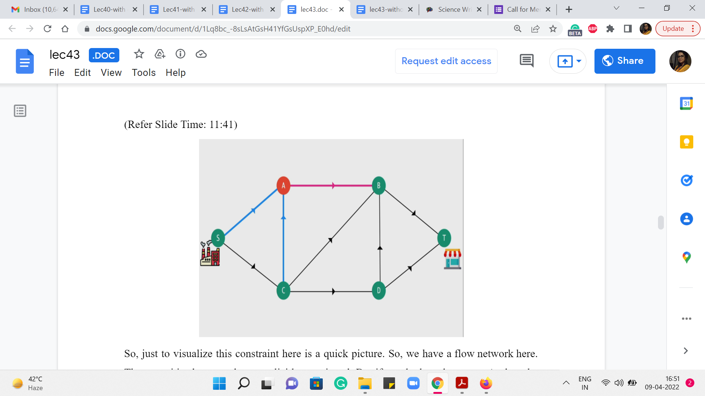
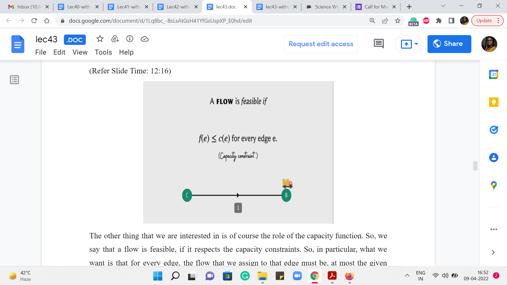
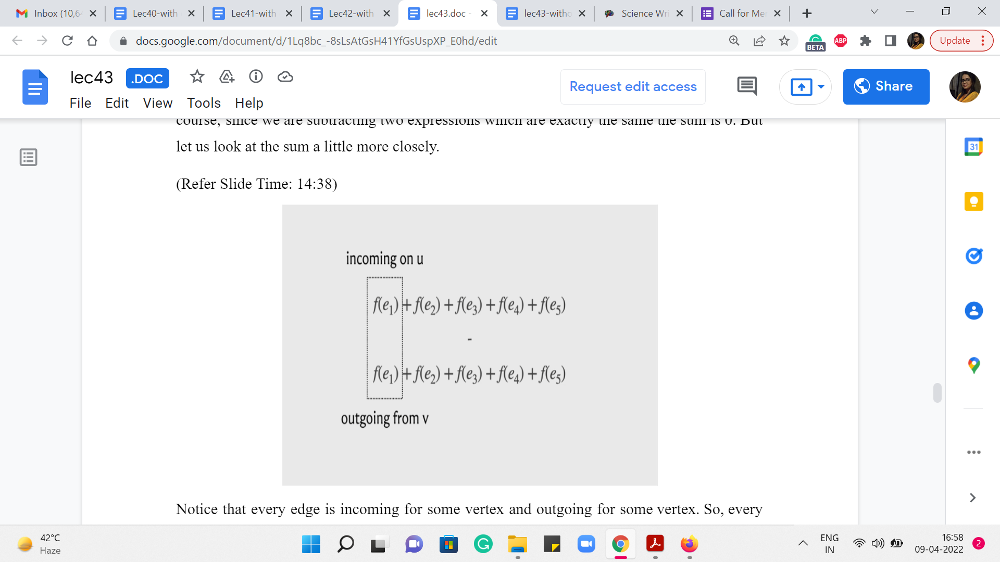
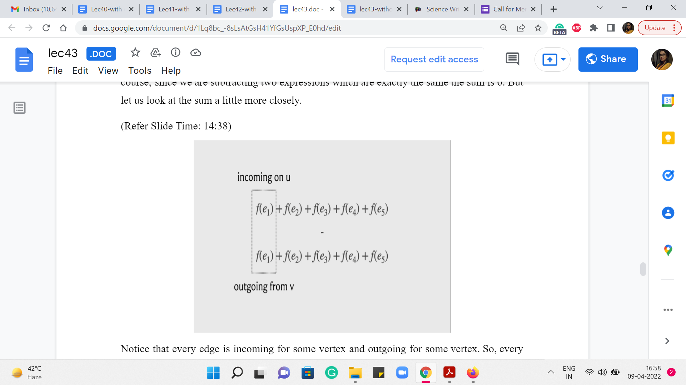
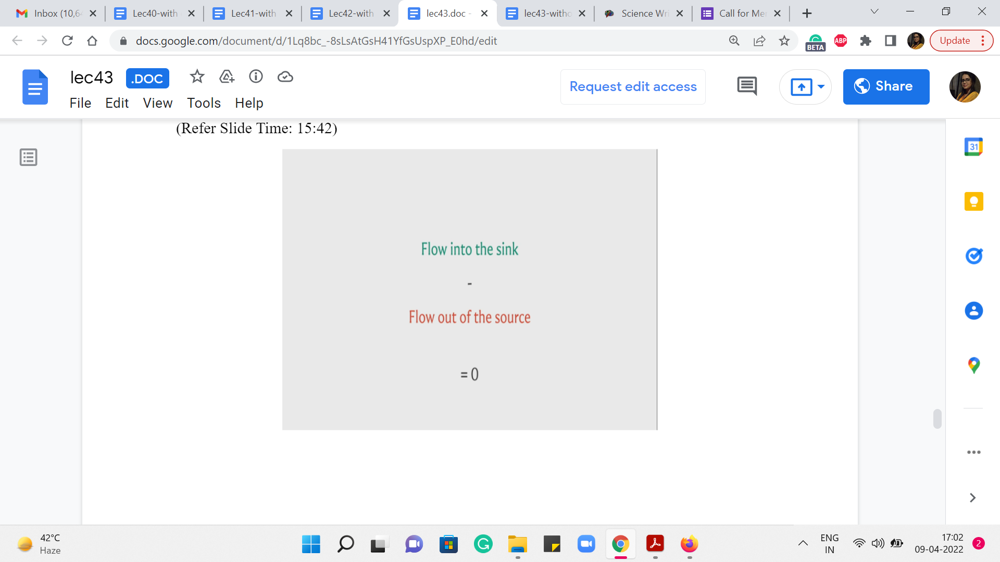

M 1 (Introduction)
Lecture - 43
Network Flows - Module 1 (Introduction)
(Refer Slide Time: 0:11)

Welcome to the eighth week of ‘Getting Started with Competitive Programming.’ For this week and the next, we are going to be focused on ‘network flow,’ which is our last major topic in the context of graph algorithms. If you are seeing the flow problem for the first time, then it may strike you as a really specific problem. And you may wonder if it is worth all the trouble to just learn one specific problem.
So, my hope is that through examples that we talk about this week and the next you will also see why it is not just this one problem but a really powerful technique in the sense that there can be so many other problems, which may not look like they have anything to do with flows and in fact they may not even look like they have anything to do with graphs, but they can still be in some sense modeled or converted as an instance of the flow problem and then everything that you have learned here will become really relevant.
So, in this module, we are going to start off by just setting up the problem introducing you to what the optimization goals are, and also describing one particularly popular solution to the problem, which we will implement in the context of a UVa problem called ‘internet bandwidth,’ which really very directly asks you to solve an instance of maximum flow.
There is not much going on here in terms of disguise. It is a pretty routine maximum flow problem. But the good thing is that it will give us an opportunity to test the correctness of our implementation. So, with that said let us get started. So, before giving you a bunch of formal definitions, let me begin with a story that will hopefully illustrate the major aspects of the flow problem, and then we will get to set it up in a more precise way.
(Refer Slide Time: 1:55)


So, let us say that we live in a city where there is a factory, and there is a shop, and the factory needs to send materials to the shop on a fairly regular basis. The way it has to do this is, by using the road network in the city and let us say that it looks something like this. So, there are four other, sort of, locations, and these locations are connected by one-way roads with directions specified by the arrows and the presence of the roads indicated by the edges that connect these locations.
So, as you can see, there is a truck that is waiting in the parking lot of the factory, and what it would normally do is just, you know, take up a path from the factory to the shop and perhaps find its way back. If you wanted to find, in some sense, the shortest path, if you have the length of the roads at hand, then you already know how to do this based on our discussions before about the shortest path problem and so on.
Let us now imagine that sending one truck across is not really enough. A lot of supplies need to be sent. And they only fit in across multiple trucks, which need to get simultaneously to the destination.
(Refer Slide Time: 2:46)
 
So, let us say that we now have three trucks and the drivers are friends and they just want to go through a common route. So, they all go a particular way that they like which just happens to be different from the one that we saw before. As you can see there are multiple ways of getting from the factory to the shop. And as of now, all of these roads are completely open and fully available to us. So, using any of these paths, from the shop to the factory would be perfectly fine.
Let us say that at some point we have some construction work going on, on this road from C to B, because of which we are told that you cannot have more than one truck passing through this road at a time. Okay. So, this means that what we just did – have all the ‘three trucks’ that we have, use this road simultaneously – is no longer possible.
And you should also imagine that these trucks are continuously moving. So you cannot say that, oh, I will have the first truck first take up the road and I will keep the other two waiting at C, and once the first truck has reached B, then I will send the second one. So, that is something that we do not really allow. You have to think of all the movement that happens across the road as being, in some sense, simultaneous. Or the other way to think about it is that the trucks are not going to wait. So, they are not permitted to actually stand at a particular location.
So, whatever comes into a particular vertex, has to immediately move out, along one of the outgoing edges from that vertex. Okay. But it is just this one road that is constrained, so in fact, we can still continue to send our trucks across other parts. And even if for some reason this was our lucky road and we want to make sure that we send at least one truck across this road, it is still okay because there are a few other options that are still available to us.
So, for instance, here we are sending even a collection of 5 trucks, by just exploiting the upper and the lower paths that are still available in an unconstrained sort of fashion. But let us say, a few days go along and now one of the other roads also becomes constrained in terms of how much traffic it can handle.
(Refer Slide Time: 5:10)

And let us say this keeps happening to the point where you are given numbers for every road in the network. And you are told that look this road can only handle so much traffic at a time. And now you are just back to the drawing board and you are trying to figure out, what is the maximum number of trucks that I can send simultaneously from the factory to the shop.
In fact just by looking at these numbers, can you come up with a quick upper bound on the maximum number of traffic that you can send from the factory to the shop? So for instance, like before, is it possible to send 5 trucks or 4 or 3? Just think about that for a moment and come back when you are ready. Alright. So, hopefully, you had a chance to think about this for a minute. You might have thought that, for example, if you look at the roads that are going out of S, they have capacities of 9 and 7. So, it is certainly not possible to send out more than 16 trucks at a time.
By similar logic, you may have observed that the two edges that come into the shop, which are the only two possible ways of reaching the shop, have capacities 2 and 3, which means that no matter what we do we will not be able to send more than 5 trucks at a time. So, of course, 5 is more informative than 16, so if you discovered that then that is definitely an improvement.
But if you looked at the numbers a little bit more, you may have observed that any way of going from the shop, from the factory to the shop, irrespective of how you choose to do it, you cannot avoid these 3 edges that are in the middle, which all have a constraint of one truck at a time. So, these edges are the edges from A to B, from C to B, and from C to D. There is no path from the factory to the shop that does not use one of these edges.
So, at any given point of time, let us say, if you are able to send 4 trucks simultaneously, then by the ‘pigeon hole principle,’ you must be sending, at least, two trucks on one of these roads. But then that is a violation of the capacity constraints that we are working with. So if we want to respect these numbers that are there alongside the roads, then well the maximum number of trucks that we can send across this network is certainly at most 3.
And you can probably figure out that this bound is tight in the sense that you can actually find a way of sending 3 trucks across this network without encountering a problem. Notice that when you do come up with a way of doing this, there are going to be at least 3 but very likely 4 edges that you are using to their limit, in the sense that the number of trucks that you are sending across these edges is actually equal to the capacity of the road that they are traveling on.
So, in some sense, you can think of these edges as being saturated or as being tight. Different people use different terms to describe this situation, where a certain edge in the network is being completely used up to the brim. Okay. So hopefully, this setting gave you some intuition for the sort of thing that we want to do.
(Refer Slide Time: 8:10 & 10:16)


So, let me now introduce the formal definition of a flow network. So, a flow network is simply a directed graph, which has two special vertices, which are called the source and the target. They are often denoted S and T. You can typically assume that the source is a vertex that has in-degree 0, which is to say that all the edges incident on the source, are going out of it. And you can also assume that the target is a vertex that has out-degree 0, which is to say that all the vertices incident on T, are in fact incoming edges, they are coming into T.
Some people like to refer to this target vertex T as the destination or the sink vertex. So, you will often hear about a source and a sink in a flow network. So, it does not really matter which words you choose to use as long as you know what they mean. Now, apart from specifying these two special vertices, we are also given a ‘capacity’ function, which you can think of as a way of modeling the numbers that we just discussed in the example that we talked about earlier.
So, a capacity function simply assigns a non-negative number to every edge in the graph. And you want to allow for the possibility of assigning a so-called infinite capacity to your edges as well if you need to. That is just a way of modeling the idea that some edges do not even have a capacity constraint as such. You can pass as much flow through them as you want.
Now, even though we have not formally defined what a flow is, hopefully, based on the discussion we have had so far, you know what I mean in an intuitive sense. Now in terms of, where these numbers come from, they could be real numbers. But often based on your application, they could just be integers.
So, you have to worry about this, when you have to declare the type of array that is going to store the capacity information. So, just remember to watch out that for a bit. We are going to usually default to integer capacities because for most applications that is, kind of, enough. But just do watch out for scenarios that may be different from this default. Alright. So, this is the input. This is what a flow network is. This is what is given to us.
Now let us talk about what a flow actually is. So, a flow is also an assignment of numbers to the edges of a flow network, but unlike capacities, for instance, we do not really require these numbers to be non-negative. And we do require them to respect certain constraints. Okay. So, first of all, our concept of a flow needs to model this idea of things not waiting at the junctures.
Remember when we were talking about having trucks move from the factory to the shop, we said that trucks are not going to wait around at the intersections. So, this idea is captured by what we call a conservation constraint, which roughly speaking says that all the flow that comes into a vertex must also leave that vertex. This is going to be true for all vertices, other than the specially designated source and target vertices.
So, what we want is that if we add up all the flow that comes into a vertex, which is the term that you see on the left-hand side of this equation, so, this is basically a sum over all the in neighbors of the vertex v and we are looking at all the flow that is on those edges, that must equal the total amount of flow that is going out of the vertex v, which is to say that this is now a sum over all the out neighbors of v. And we are basically adding up all the flow that has been assigned to all of these out edges.
(Refer Slide Time: 11:41, 12:16 & 12:51)
  
So, just to visualize this constraint here is a quick picture. So, we have a flow network here. The capacities have not been explicitly mentioned. But if you look at vertex A, then the edges of interest are marked in blue and red. And what we want is that whenever we assign a flow, we would want the total amount of flow on the blue edges to equal the total amount of flow on the pink edge. So, in this case, there is just one out-neighbor. In general, there could be more. And we just want all of these numbers to tally up.
The other thing that we are interested in is of course the role of the capacity function. So, we say that a flow is feasible, if it respects the capacity constraints. So, in particular, what we want is that for every edge, the flow that we assign to that edge must be, at most, the given capacity of that edge. Okay. So, that what a valid flow is, it is an assignment of flow values to every edge that respects conservation constraints on every vertex other than the source and the target, and respects capacity constraints on every edge.
Now what is the optimization objective here? Well, in some sense we want to maximize the flow that we can pass through this network. Well, what does it mean to maximize the flow? What is the value of a flow?
Well, one way of thinking about the value of the flow, if you go back to the example with the factory and the shop, is essentially how much material was the shop able to receive or how much material was the factory able to push out.
It turns out that these two quantities are actually always going to be the same if you are working with a valid flow. Intuitively the reason is that everything that gets out of the factory because there is no possibility of getting stuck at intersections, all of that material must move through the network and is compelled to really come to a halt at the target which is the shop.
So that is an intuitive way of imagining why these two quantities must be the same, but let us just look at it in a little more precise sort of language.
(Refer Slide Time: 13:49 & 14:04)


So, in particular I am going to say that the value of a flow is just the total amount of flow that is coming out of the source. So, we sum the values of the flow on the edges that are incident to the source vertex.
And what I was just saying is that this is the same as talking about the amount of flow that ends up at the target vertex. So, if we were to sum the flows on all the edges that are incident to the target, this would be the same thing.
(Refer Slide Time: 14:18, 14:38 & 14:57)
 
 
To see why this is the case, let us just look at this quantity, which is the sum of all the flows and all the edges written out twice and let us say we subtract one from the other then, of course, since we are subtracting two expressions which are exactly the same, the sum is 0. But let us look at the sum a little more closely. Notice that every edge is incoming for some vertex and outgoing for some vertex. So, every edge is incident on exactly two vertices. And from the point of view of one of these vertices, this is an out edge and from the point of view of the other vertex this is an incoming edge.
So basically, what we do is, let us just mark all the edges that are incoming on the vertex ‘u’ and mark all the edges that are outgoing for a vertex ‘u.’ Let us do this separately, for every vertex ‘u’ other than the source and the target. So, when you do this for a specific vertex, when you identify all the numbers corresponding to the flows on the edges incoming to that vertex, and all the edges that are outgoing, well, you will zone in on a subset of numbers which will essentially cancel out because of the fact that this is a flow and it respects the conservation law.
(Refer Slide Time: 15:42)
 
So, these sets of numbers, will just keep cancelling out for every vertex that you consider. And once all the cancellations are done, what you will be left with, is the flow into the sink minus the flow out of the source. But now remember that we started with an expression that was equal to 0. So, this gives us the claim that the flow that comes into the sink or the target vertex is the same as the flow that got out of the source.
So, this is the quantity that we are looking to minimize. We are trying to find a maximum flow, a flow that maximizes its value, the value being how much were you able to push out of the source or equivalently, how much were you able to accumulate at the target. Alright. So, that is the goal and what we are going to do in the next segment of this module is to try and come up with an algorithm that actually finds the maximum flow.
Just to leave you with something to think about, before you come back, let me propose a natural greedy algorithm for maximizing the flow. Remember that we are interested in getting materials across from the source to the target.
(Refer Slide Time: 16:42 & 19:04)


Let us just go back to the example that we were working with, with the factory and the shop. So, let me just try and see if I can find a path from the factory to the shop. So, for instance, here is a path which is highlighted in yellow and for these edges, I have also jotted down the capacities of these edges for you.
So, if you were the manager at the factory and you are considering this particular route to the shop, how many trucks do you think you would be able to send across this particular path? Well, you have probably observed that although the first road on this path can accommodate as many as nine trucks.
If you try to send 9 trucks, they would only be able to go as far as B and then after that seven of them would not know what to do because only two of them would be allowed to pass through. And since you know that you cannot have things waiting at interim locations, you know that nine is definitely not feasible. In fact no number larger than 2 is going to be feasible because that is, in some sense, the weakest link in this chain.
So, here of course we have assumed also that there is no pre-existing flow and these are the original capacities. In general you might be in a situation, where you have already designated a plan where some trucks may already be using certain edges, in which case you will have to work with the remaining capacity as opposed to the original capacity. But let us not worry about that for now.
Let us just imagine that we are at the beginning of the process, where the full capacity is available to us. And in this setting, and also more generally, the idea that is worth remembering is that whenever you are thinking about pushing flow along a path, you have to worry about what we normally refer to as the ‘bottleneck’ edge, which is the edge that has the lowest capacity. Because this is what is going to determine the maximum amount of flow that you can actually push along this path.
So, applying this general principle to this particular example, we can conclude once again that the maximum amount of flow that you can push through this particular path is two units. So you can plan to send two trucks along this path, which means that one way of remembering that this is something that we decided to do is by adjusting the capacities to reflect our decision.
So, in particular, let us reduce all the capacities of these edges by two units, so that we know that, that is what this capacity was reserved for. So, at this point, the last edge on this path is as good as gone. It is a 0 capacity edge. And we will never be able to use it.
(Refer Slide Time: 19:23)

So, it makes sense to go ahead and actually delete this edge. And now we could basically do the same thing. We could find a path from S to T, once again, in this graph with the adjusted capacities. And we could again determine the bottleneck capacity on that path and determine that, that is the amount of flow that we could push along this new path.
We could again adjust the capacities and we could keep doing this. At some point we are going to get stuck. And that is going to happen when you can no longer reach D from S. So, when S and T are disconnected from each other. That is when we can no longer continue to increment our flow, as I was just describing.
Notice that you will get stuck at some point, you cannot go on forever. And the reason for that is that in every iteration, you are strictly increasing the value of the flow that you are working with. So, the maximum flow is a finite number that is the bound on the number of iterations that you will go through.
So, this is definitely a legitimate procedure for producing a valid flow. But we are interested in more than just coming up with some valid flow. We want a flow that has the maximum possible value. So, does this algorithm do that for you or did I just string you along on something that is potentially sub-optimal?
I will let you think about that and if you want to find out, you should come back to the next segment of this module, where we will talk about this algorithm and we will build up on it in interesting ways. So, I will see you there!